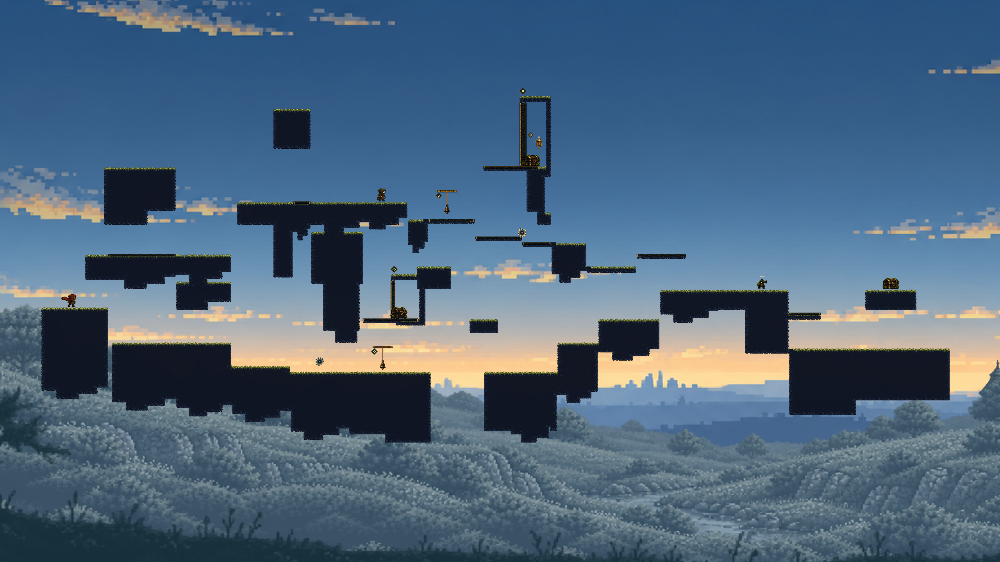

Map 驱动的内容生态 · 第一轮真实闭环
8 个不同尺寸 Macro，直接拼接；双回环、3 个实体宝箱、商人、反冲攀岩与限时宝库。候选验证与人工趣味认可分开。
打开真实 Godot 隔离试玩 · A/D 移动，空格跳跃，鼠标松开射击反冲，E 购买，M 整图，R 重试。
范围：三个 Seed 检验补缺、复用和局部需求变更；使用同一张物理拓扑，不能视为三张不同探索地图。没有 Boss 战，尚未人工认可趣味。
实际完整地图

产出与复用
| Seed | 生成调用 | 复用模块 | 真实整图策略通过 | 完整离线耗时 |
|---|
| ecology-0 | 8 | 0 | 35/35 | 130.4s |
| ecology-1 | 0 | 8 | 35/35 | 126.6s |
| ecology-2 | 1 | 7 | 35/35 | 165.3s |
共 105 条整图策略，其中 84 条独立动态相位样本。物理库候选 9 个版本，生产准入 0。耗时含进程启动、物理测试、证据冻结和读写，不是 Runtime 帧率。
关键路线录像
A · 岩体反冲攀升、取宝、回程与购买
下载完整短片 · 正常 1 倍速度、程序输入、末尾保留 1 秒完成画面。
B · 双路线与敌人命中回充
下载完整短片 · 正常 1 倍速度、程序输入、末尾保留 1 秒完成画面。
C · 等门关闭后，从内部射铃返回
下载完整短片 · 正常 1 倍速度、程序输入、末尾保留 1 秒完成画面。
创意与实现状态
角色和参数变化不增加创意家族数量。以下是设计规则与提案，不是已被认可有趣的 Module 数量。
- recoil-height · 已有规则适配器
Choose a takeoff and shot direction to clear a real cliff - recoil-diagonal · 已有规则适配器
Trade vertical lift for horizontal reach toward a visible receiver - timed-cache · 已有规则适配器
Shoot in flight, enter the timed chamber and leave before closure - recoil-canyon · 已有规则适配器
Use a short jump and lateral recoil below a low rock arch - zigzag-return · 已有规则适配器
Climb alternating rock banks; choose a separate rapid descent on return - air-refund · 已有规则适配器
Use an airborne enemy hit to earn another shot before landing - gear-window · 已有规则适配器
Read a gear window, move through shelter and jump from a safe departure - merchant-hub · 已有规则适配器
Return with earned chest coins and decide whether to spend - reunion · 已有规则适配器
Recognize a landmark from a second approach and select the next route - thorn-slot · 提案，尚无生成实现
Enter a readable thorn-lined slot and use horizontal recoil through it - chase-landing · 提案，尚无生成实现
Shoot to release a platform and intercept its future position - brake-under-ledge · 提案，尚无生成实现
Fall past a rock lip and brake into a recessed reward pocket - one-shot-two-routes · 提案，尚无生成实现
Spend one airborne shot on either a high reward route or a fast low route - escape-rising-platform · 提案，尚无生成实现
Leave an ascending carrier before the low ceiling and recoil into a side cave - visible-detour · 提案，尚无生成实现
See a nearby reward first, discover its entrance later from another route - reward-return-reveal · 提案，尚无生成实现
Earn a reward then open a short return to a familiar landmark
验证边界
- One fixed eight-Macro physical topology; seeds test lifecycle, local timer demands and dynamic phases, not topological diversity
- Bootstrap generation adapts authored measured landforms; arbitrary new ideas still require a producer implementation
- Finite observable-state input policies; not human success rates or a universal movement solver
- General Module port/state relations remain UNKNOWN; only isolated instances may reuse these payloads
- No Boss fight, campaign or larger-region acceptance; human fun approval remains absent
结构化结果 · 原始失败、输入、源快照和压缩物理轨迹保存在 map-edit 版本化归档中。视频反馈可以直接在聊天中按 A/B/C 提供，无需填表。